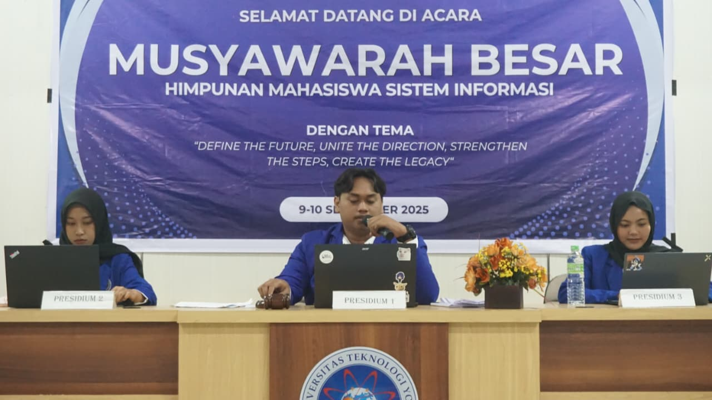
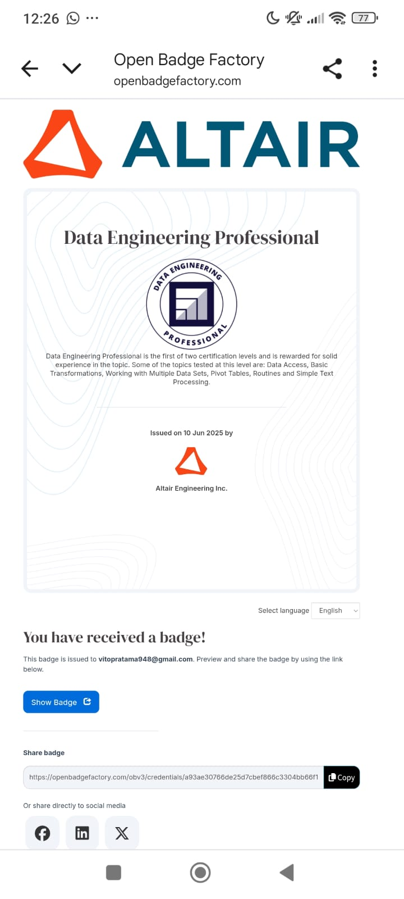
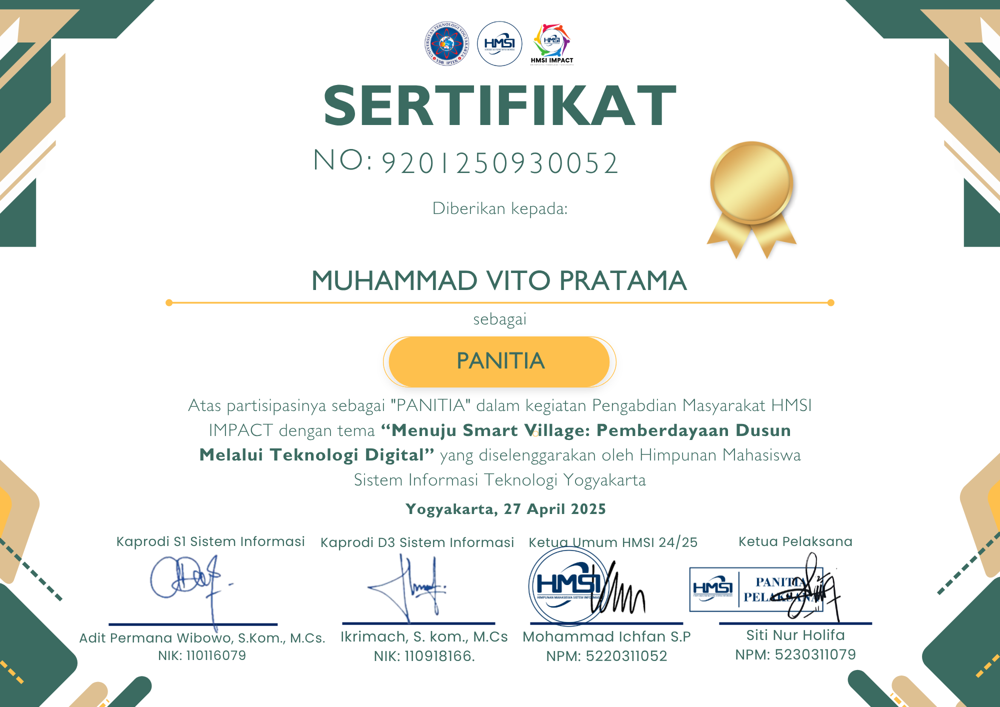
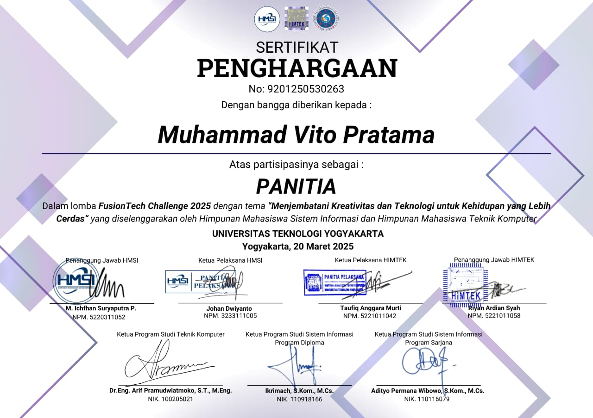
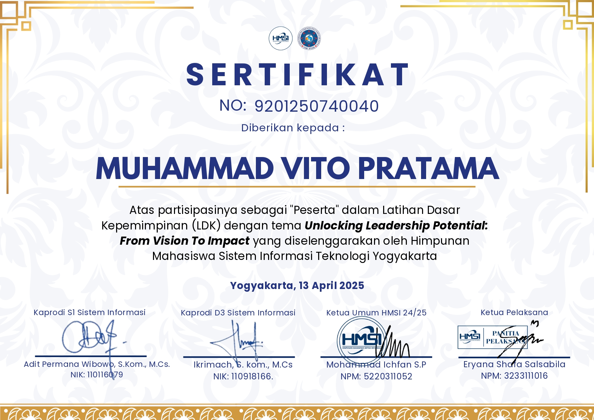
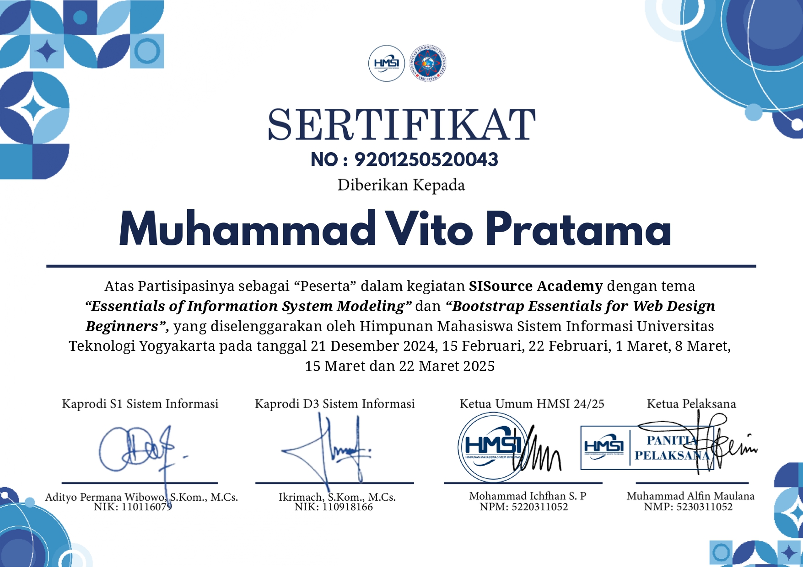
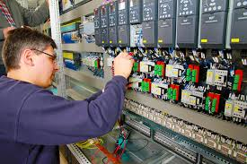
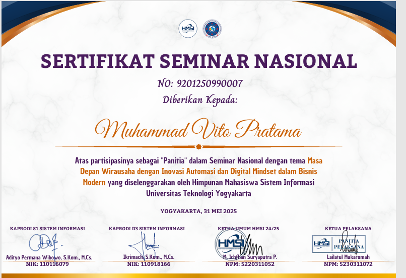

Memimpin jalannya sidang Musyawarah Besar dan menjadi pengambil keputusan tertinggi dalam forum.

Sertifikasi kompetensi RapidMiner untuk analisis data dan pemodelan prediktif.

Berperan sebagai koordinator utama dalam penyusunan, perencanaan, dan pengelolaan rangkaian program HMSI IMPACT, sebuah inisiatif pengabdian masyarakat berfokus pada transformasi digital menuju Smart Village. Tugas mencakup pengelolaan alur acara, koordinasi pemateri, pengaturan teknis kegiatan literasi digital, serta memastikan setiap kegiatan berjalan efektif dan memberi dampak nyata bagi masyarakat Dusun Dukuh Sinduharjo.

Memimpin perencanaan dan pengelolaan seluruh rangkaian kegiatan FusionTech, sebuah kolaborasi antara HMSI dan HIMTEK yang berfokus pada inovasi teknologi dan pengembangan solusi digital. Bertanggung jawab atas koordinasi rundown, pengaturan teknis, manajemen tim acara, serta memastikan seluruh aktivitas berjalan terstruktur dan berdampak bagi peserta.

Mengikuti kegiatan Latihan Dasar Kepemimpinan (LDK) HMSI dengan tema Unlocking Leadership Potential: From Vision To Impact. Program ini berfokus pada pembentukan karakter kepemimpinan, pengembangan kemampuan komunikasi, manajemen organisasi, serta peningkatan kemampuan dalam mengelola tim dan memahami struktur kepemimpinan di lingkungan mahasiswa Sistem Informasi UTY.

Mengikuti rangkaian pelatihan SISource Academy dengan materi “Essentials of Information System Modeling” dan “Bootstrap Essentials for Web Design Beginners”. Kegiatan ini diselenggarakan oleh HMSI UTY dan berfokus pada peningkatan kemampuan modeling sistem informasi serta dasar-dasar desain web menggunakan Bootstrap.

Bertanggung jawab atas operasional dan maintenance kelistrikan di Sheraton Mustika Yogyakarta.

Mengelola administrasi, proposal pengajuan, korespondensi surat, dan Laporan Pertanggungjawaban (LPJ).
Menguasai teknik penyeduhan manual dan Japanese Style Iced Coffee di KGYK Coffee.